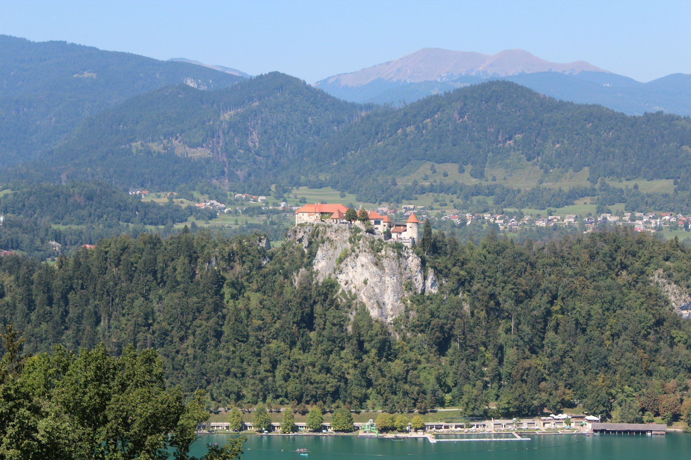
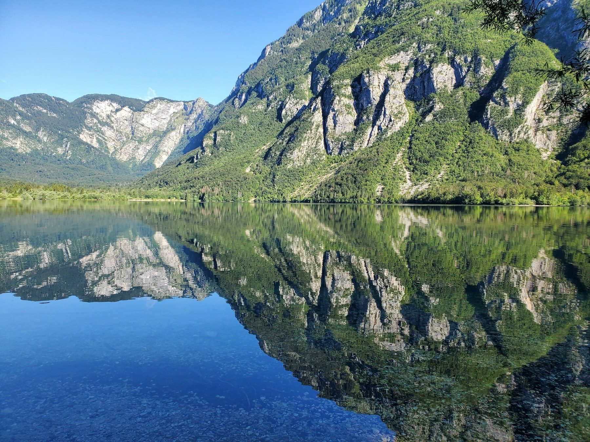
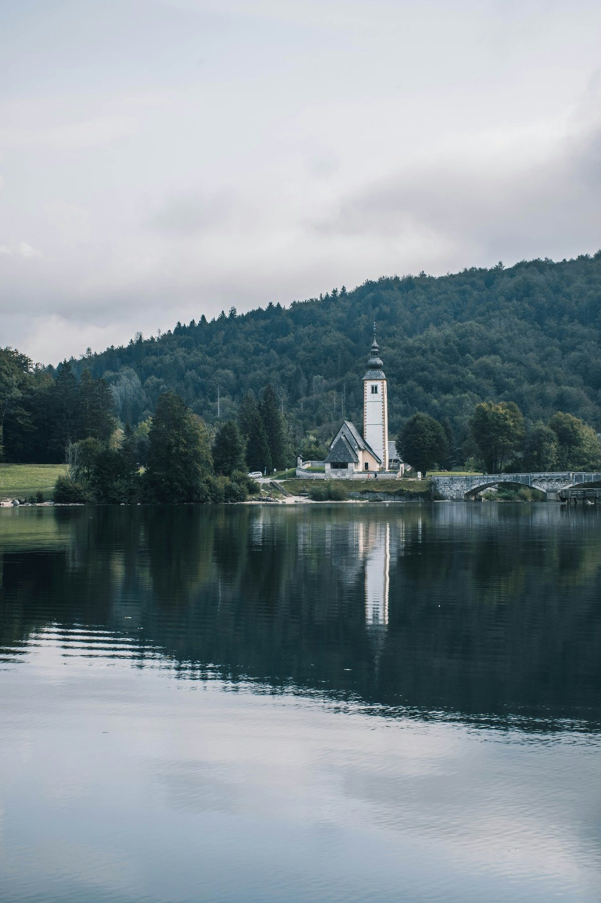

Bled & Bohinj
Candidate country · Slovenia · the fairy-tale lake and its quiet big brother
Two lakes forty minutes apart with a clean division of labour: Bled does the fairy tale, Bohinj does the mountains. Both plans base in Bled so the bags stay put.
Bled
A traditional pletna boat rows you out to the island church — Slovenia's only natural island, since the deck will ask — and Bled Castle holds its cliff above the water, history and lake views included. The lakeside promenade at golden hour is the deck's prescribed evening, with a slice of kremšnita, the vanilla-and-custard cream cake, as the mandatory settlement.
On foot: the lake loop is about 6 km and mostly easy (group-photo territory), and the Ojstrica viewpoint is short but steep and earns the photo everyone means by "the Bled photo" — good shoes, per the deck. Swimming happens at the designated Mala Zaka / Velika Zaka areas; check the local signage and skip paying for every activity — one rowing boat between the group is plenty.


Bohinj
Bohinj is the bigger, colder, quieter lake: mountains pressing in, the little church of St John at the water with its stone bridge, and the Vogel cable car running up the mountainside for the panorama. Walk the shoreline as far as the group feels like — a flat out-and-back suits everyone — and swim at the designated spots around Ribčev Laz and Ukanc if the mountain water has warmed enough to qualify as swimming rather than survival.


Vintgar Gorge
Between the two lakes sits Vintgar Gorge: a boardwalk bolted to the side of a river canyon, closing the loop between Bled and Bohinj. It's the deck's filler activity for a reason — cool air, green water, and no effort rating worth discussing.
Eat & drink: kremšnita at Bled (non-negotiable), apartment-cooked dinners with market supplies, and potica if someone's grandmother is visiting. Currency is the euro.Field note · Balkans 2027